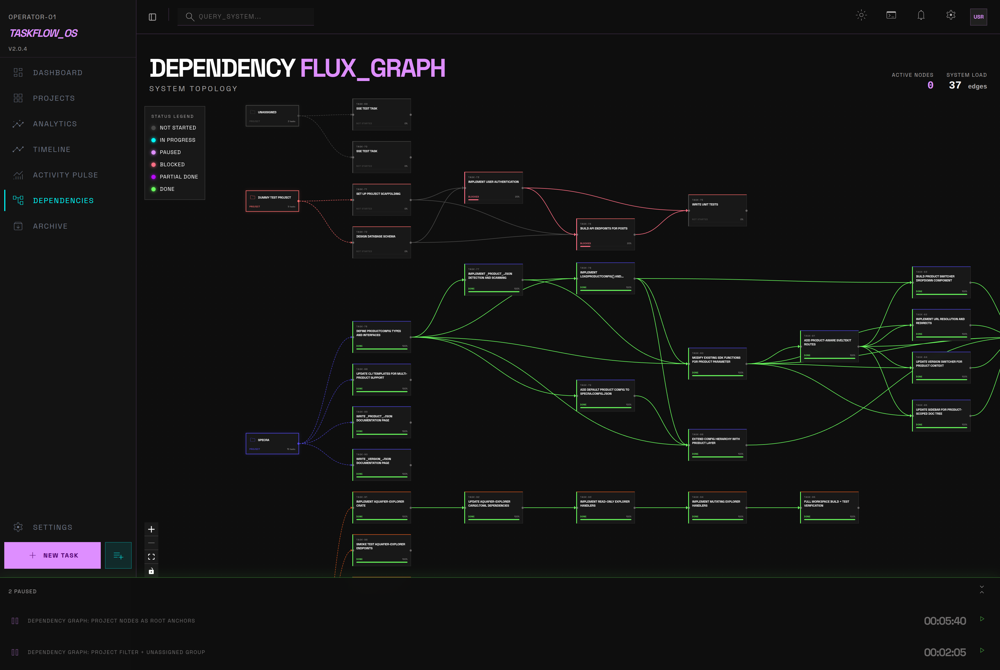
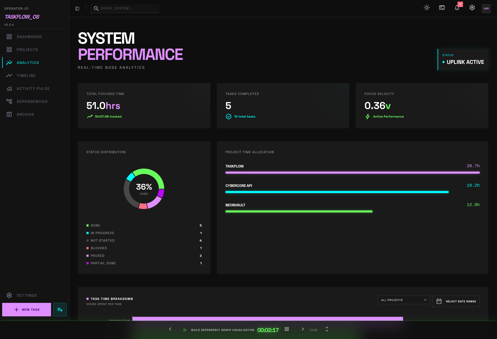
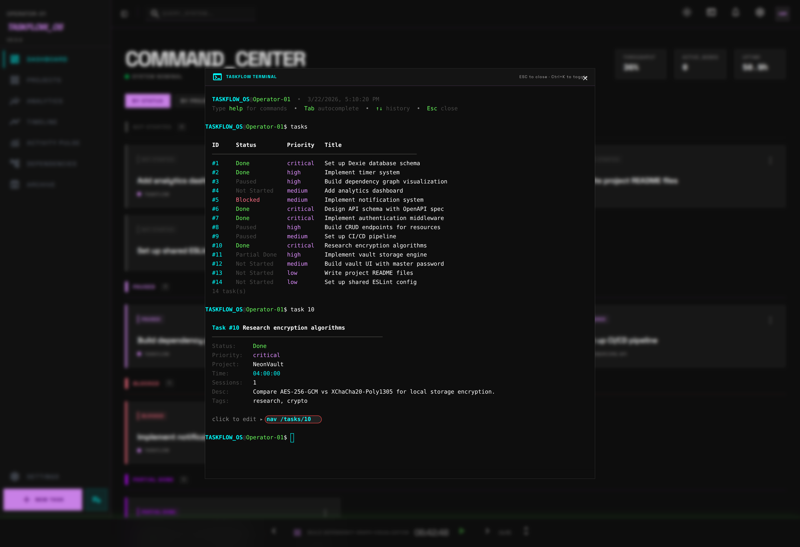
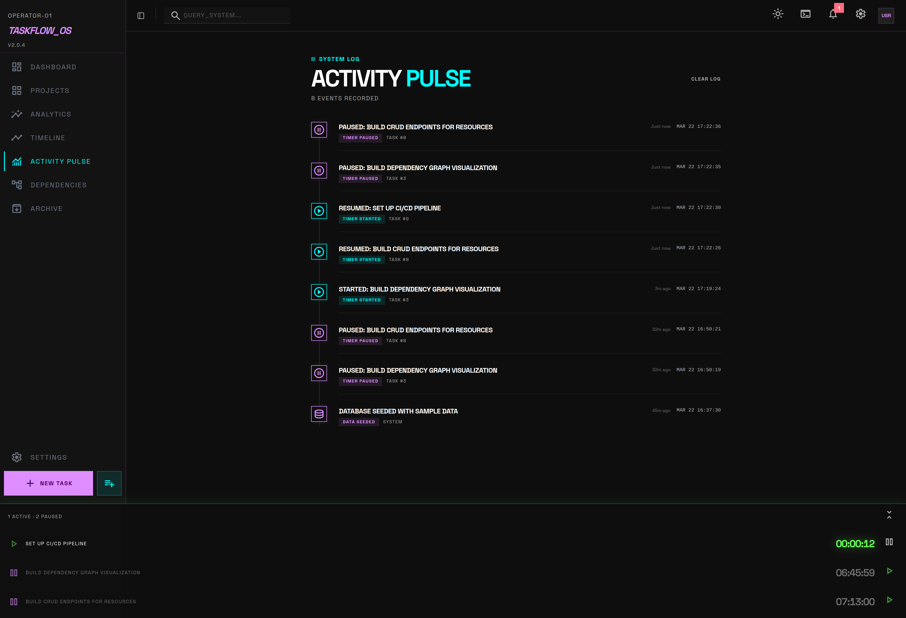
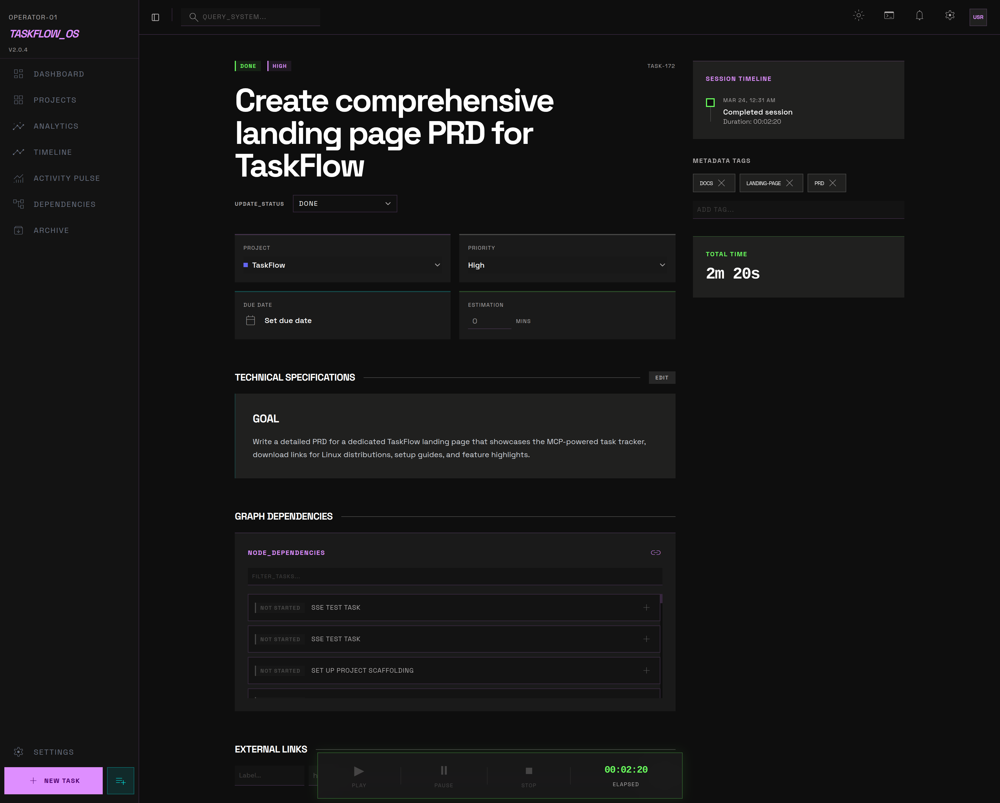
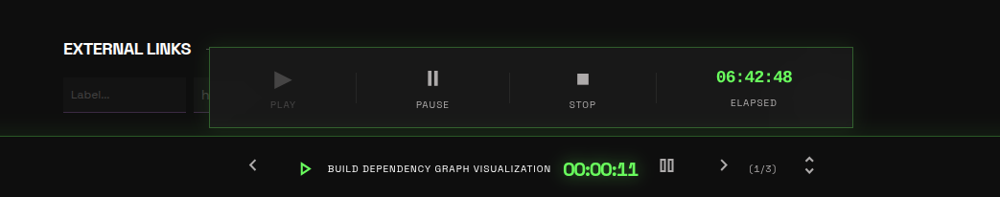
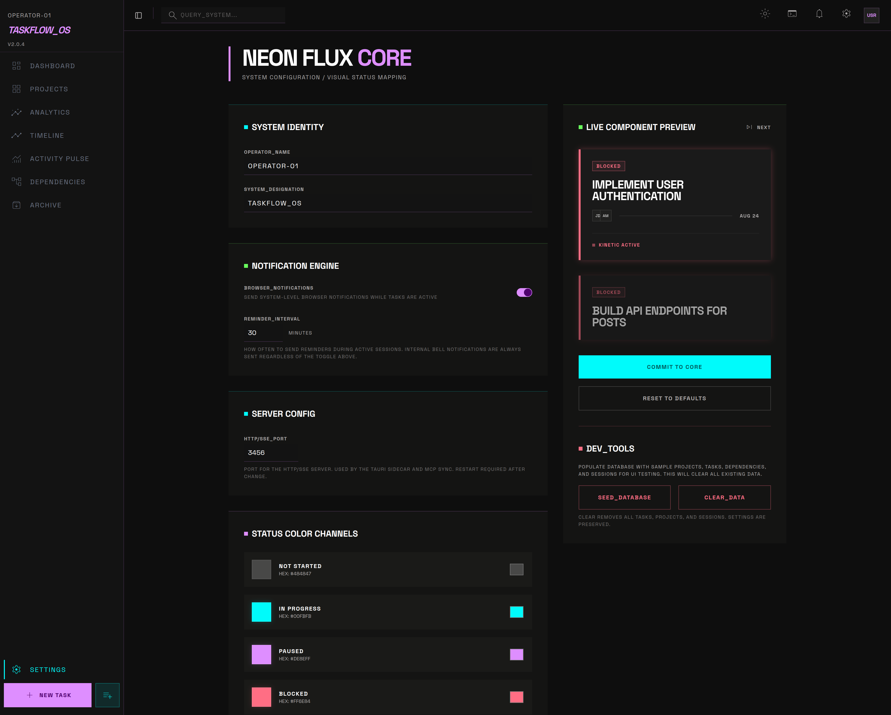
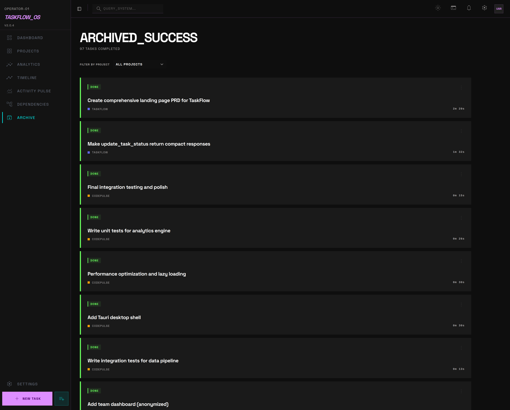

A Claude Code agent implements a feature from scratch — creating tasks, tracking time, logging progress, and marking work done. No human touched the board.
Everything you need to manage complex software projects, designed specifically to be driven by LLMs via the Model Context Protocol.
Install the server with one command. Your AI gets tools for tasks, projects, timers, and analytics. It creates tasks, logs breadcrumbs, and marks work done autonomously.
Agent writes to SQLite → SSE fires → Tauri app updates IndexedDB → UI re-renders instantly.
Tasks have dependencies. Dependencies have a graph. Interactive DAG visualization with automatic cycle detection. Your AI agent can query the graph to understand blockers before starting work.

Track time across multiple tasks. Every session is logged with precise timestamps.
AI agents use the `log_debug` tool to leave markdown breadcrumbs—hypotheses, errors, findings.
Ctrl+K opens a full xterm.js terminal. Create tasks, navigate, and manage state without a mouse.
Real screenshots from the TaskFlow desktop app. Dark theme, zero fluff.







Choose your Linux distribution format (macOS/Windows planned):
Make the TaskFlow MCP server available to your system via npm.
Create a
.mcp.json
file in your project root (or home directory for global access). Claude Code will auto-detect it.
The agent calls get_agent_instructions on startup — it learns how to use TaskFlow automatically. No prompt engineering needed.
Run Claude Code inside a tmux session so agents can receive your responses in real-time from the TaskFlow UI — no terminal switching needed.
ask_user — question appears in the Agent Inbox
Without tmux, the Agent Inbox still works — you just need to manually tell the agent to check_response or respond in the terminal directly.
Designed for privacy and speed. No cloud sync, no accounts. Just an SQLite file and an SSE broadcast.
MCP responses are condensed. Null suppression and compact JSON mean your AI has more context window available for actual reasoning, not bloated payloads.
31 tools across 8 domains. Agent instructions are built-in — your AI learns TaskFlow automatically.
TaskFlow is open source under Apache 2.0 with Commons Clause — free to use, modify, and share, but not to sell as a product. The code is clean, PRs are reviewed, and contributions are welcome.